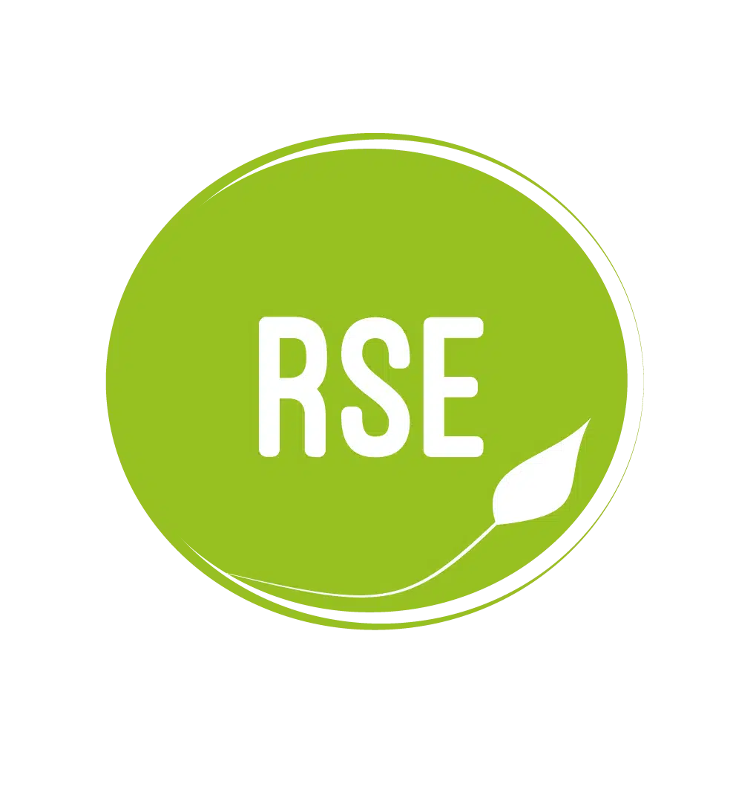

Découverte de l'environnement économique et écologique
Contexte
Nous devions choisir une organisation par équipe de 4 — dans notre cas, Heineken — pour laquelle nous avons effectué des recherches afin de présenter cette organisation dans sa dimension économique (grille des caractéristiques de l'organisation et diagnostic externe) ainsi que dans sa démarche RSE, avec un focus particulier sur les moyens mis en œuvre pour réduire son empreinte écologique liée au numérique.
Compétences acquises
TRAVAIL EN ÉQUIPE
AUTONOMIE
GESTION DU TEMPS
ANALYSE DE DOCUMENTS
Déroulement
Le projet a été découpé en 2 parties.
 Partie 1
Partie 1
Mise en place d’outils collaboratifs (Google Drive) et répartition des tâches.
Partie 2
Recherche sur les caractéristiques de l'organisation, son diagnostic externe et l’analyse de sa politique RSE.
En parallèle du projet, nous avons réalisé un cahier de tests tout au long du processus.
Technologies utilisées
Google Drive Google Docs
Google Docs